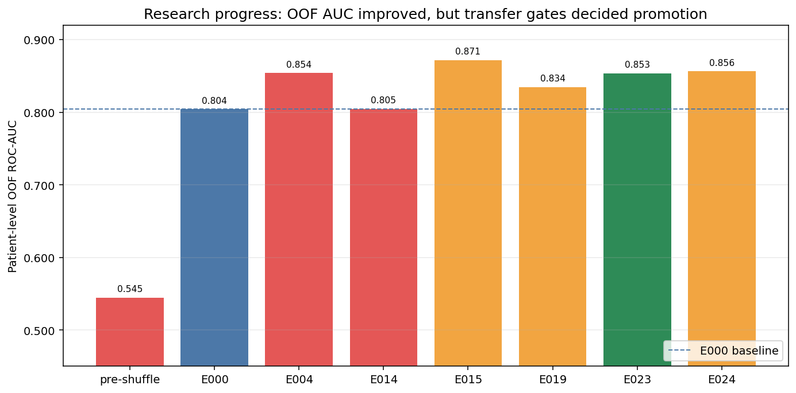
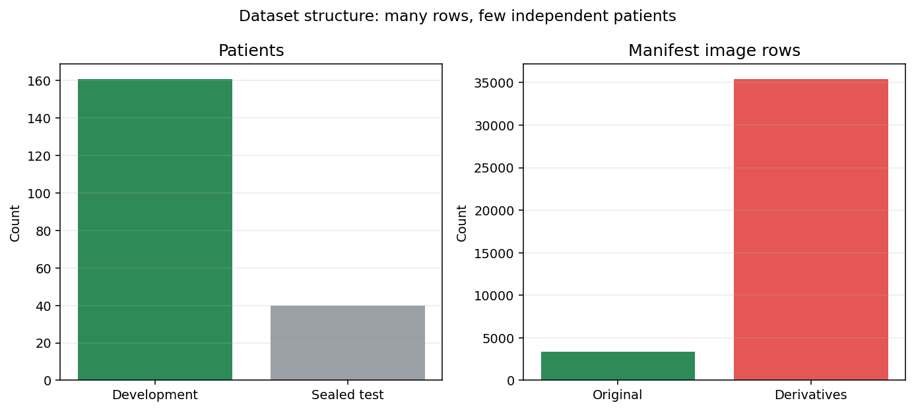
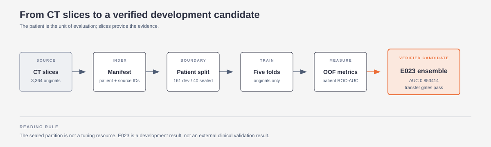
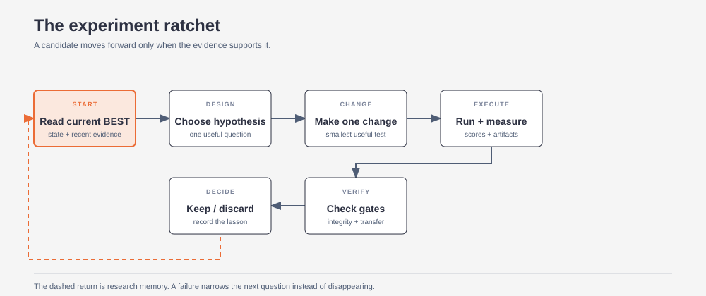
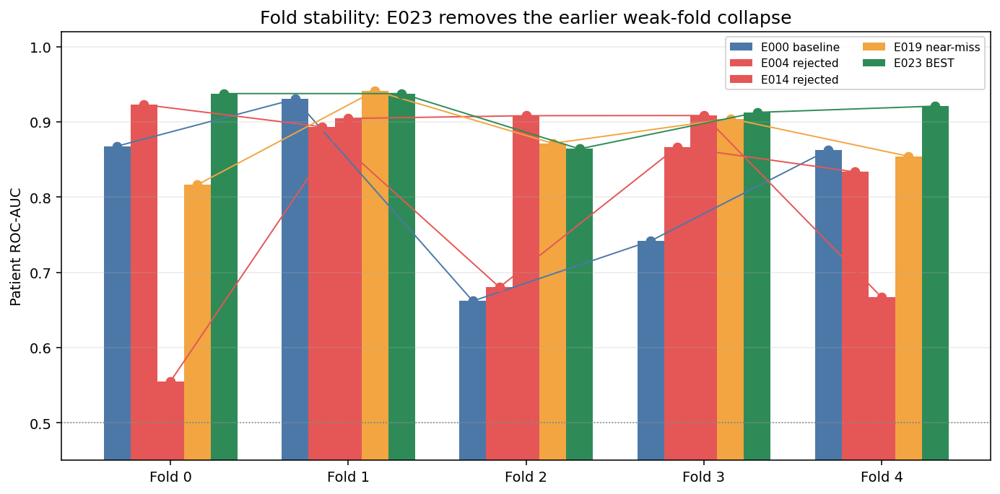
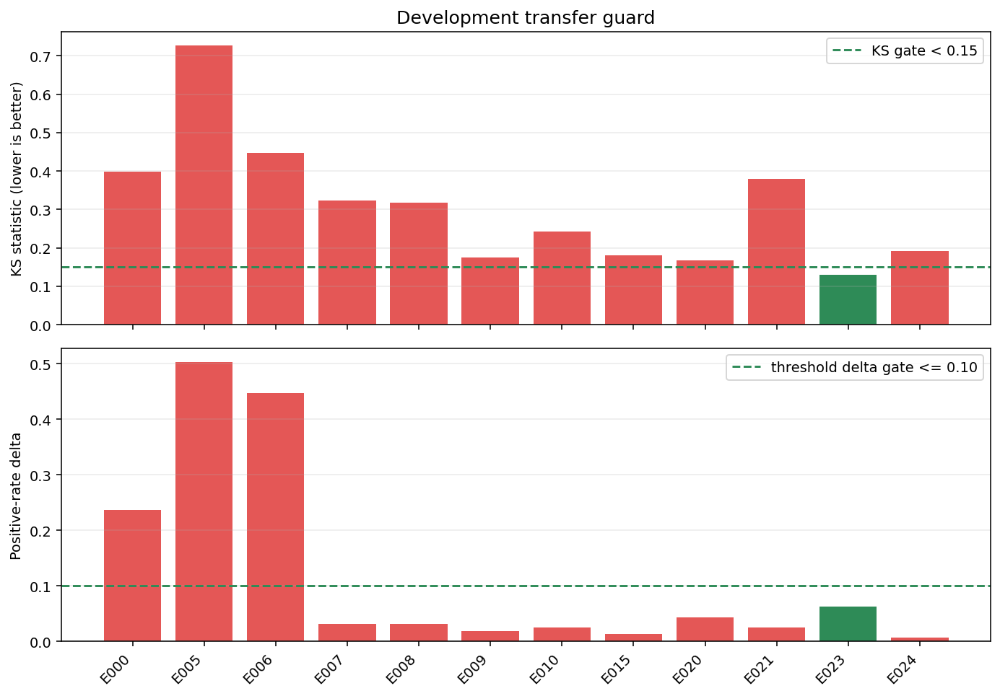
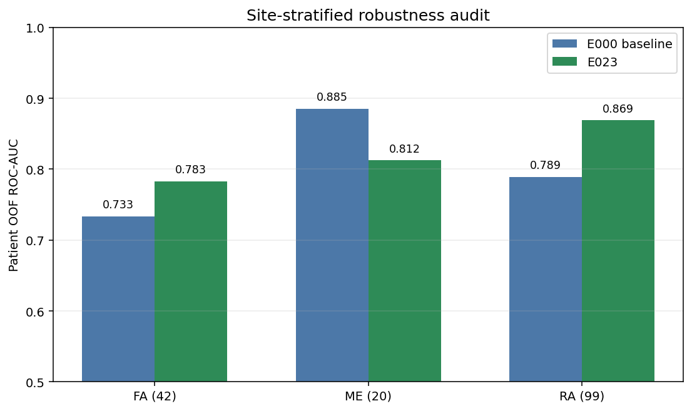
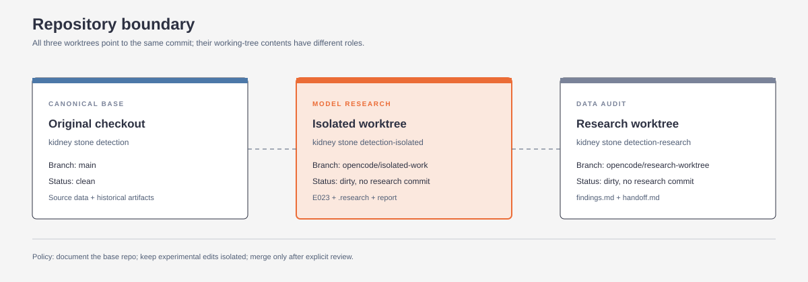
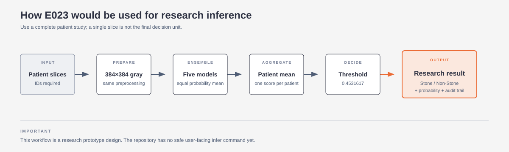

This project builds a two-class CT-image classifier:
The system does not evaluate individual slices as independent medical cases. It predicts each CT slice, averages the slice probabilities for a patient, and evaluates the patient-level result. That patient-level score is the primary metric.
The final verified development candidate is E023:
The research is marked GOOD_ENOUGH because E023 is a complete, leakage-checked, transfer-safe development candidate and the final verification suite passed.
This does not mean the system is clinically validated. The sealed test was previously opened by a historical failed run and collapsed to an all-positive prediction. It is permanently excluded from future tuning. There is no trustworthy untouched external evaluation result.
The practical conclusion is:
We have a substantially better and internally verified development model. We do not yet have evidence of clinical generalization across new hospitals or a clean external cohort.
The charts and editorial diagrams in this report are deliberately separated from the metric tables: the visuals show the story, while the appendix preserves the exact experiment records. The diagram layouts follow the linked diagram-design guidance: few nodes, explicit hierarchy, no decorative shadows, and one or two focal accents.

Figure 1. Several rejected candidates scored higher on OOF AUC than E023. The transfer guard and reproducibility gates are why E023, rather than the numerically highest OOF score, became the verified BEST.
The task is:
The important distinction is that the label belongs to the patient, not necessarily to every individual slice. A patient may have a stone visible in only some slices, while all of that patient's slices inherit the patient label.
The primary evaluation score is:
mean Stone probability across a patient's slices
-> patient-level ROC-AUC
Slice-level ROC-AUC is retained as a secondary diagnostic metric. It is not the main ranking metric.
The source is the Mendeley V2 axial CT dataset described in the repository documentation.
| Item | Count |
|---|---|
| Total patients | 201 |
| Original source images | 3,364 |
| Original Stone images | 1,577 |
| Original Non-Stone images | 1,787 |
| Supplied derivative images | 35,457 |
| Total manifest rows | 38,821 |
| Development patients | 161 |
| Sealed-test patients | 40 |
| Development original slices | 2,796 |
| Sealed-test original slices | 568 |

Figure 2. The dataset has many indexed rows but only 201 independent patients. The derivative rows are not independent medical examples and were excluded from final training.
The 35,457 derivative images are indexed in the manifest but are not used by the final research model. They are not independent patients and were found to cause memorization and validation collapse.
The split is frozen:
No patient is allowed to appear in both training and validation for a fold. The split hashes are identical between the baseline and E023:
The audit did not treat every dataset that looked similar online as a valid external cohort. The current training source is the Mendeley Data V2 dataset referenced by the base README: DOI 10.17632/fwhytt5mzd.2, 201 patients, and the original/derivative structure described above.
The search also found several related-looking sources. The audit conclusions were:
| Candidate | Finding | Decision |
|---|---|---|
Figshare 30342145 |
Same Iraq-lineage material; approximately 3,362 original CRC entries overlap the current source | Do not count as a new cohort |
| KAUH report | Claims roughly 8,400 images from 120 patients, but public material does not provide patient mapping, image labels, or sufficient licensing evidence | Request documentation; do not train |
| Yildirim repositories | Approximately 1,799 images, but the directory structure appears to mirror the same dataset family and provides no independent patient-level evidence | Treat as mirrors, not new data |
| KidneyStoneTR | Downloaded archive had 17,992 files, all 512×512 RGB JPEGs, with no CSV/JSON/TXT/DICOM patient map. Its advertised fold/holdout organization contains exact duplicate holdout images in other folds, and patient-level independence cannot be verified | Quarantine; do not use as a test set or combine into training |
| KidneyStoneTR-Seg | Segmentation extension derived from the same family, not demonstrated to be a new independent cohort | Quarantine with KidneyStoneTR |
The KidneyStoneTR archive had zero exact-file overlap with the 3,195 unique Mendeley original hashes, and normalized grayscale comparisons also found zero overlap. That is useful evidence that the files are not simply the same local images; it is not proof of an independent clinical cohort. Without patient-to-slice mapping, source documentation, and a clean duplicate audit, the advertised holdout cannot support a generalization claim.
This is why the project improved the current development pipeline instead of inflating the dataset with an unverifiable external source. The temporary audit files remain outside the repository; the decision and evidence are summarized in D:/Documents/Desktop/kidney stone detection-research/findings.md and D:/Documents/Desktop/kidney stone detection-research/handoff.md.

Figure 3. Editorial view of the data-to-candidate pipeline. The orange node is the current verified development candidate, not a clinical endpoint.
The canonical model is named kidney_cnn_v1:
Training configuration:
Mild online augmentation is used only during training:
Validation and test images are not augmented.
Figure 4. The report uses a simplified editorial version of the pipeline so the reader can see the evaluation boundary without following every implementation detail.
Every experiment followed this pattern:

Figure 5. The autonomous research loop: every candidate was measured, checked against hard gates, and either promoted or recorded as a failure.
E000 was the first strong, complete, development-only reference after correcting the data-loader shuffle problem.
The baseline was selected because:
E000 was not perfect. Its development transfer guard failed, but it was still the correct reference because later candidates had to beat a known complete result under the same metric and split protocol.
| Metric | Value |
|---|---|
| Patient OOF ROC-AUC | 0.804140 |
| Slice OOF ROC-AUC | 0.796691 |
| Mean fold patient AUC | 0.812745 |
| Worst fold patient AUC | 0.661765 |
| Fold patient AUCs | 0.867647, 0.930147, 0.661765, 0.741667, 0.862500 |
| Best epochs | 30, 31, 1, 1, 8 |
| Locked threshold | 0.430775 |
| Transfer KS | 0.397516 |
| Transfer threshold-rate delta | 0.236025 |
| Transfer result | FAIL |
The baseline was therefore a research champion, not a deployable candidate.
The append-only experiment log contains 27 numbered records: E000 through E026. Not every record is a new model training run. Some are infrastructure fixes, transfer audits, prediction ensembles, or robustness analyses.
| Stage | What happened | Main result |
|---|---|---|
| Derivative-enabled training | Trained with supplied derivatives | Memorization and validation collapse; validation loss rose above 7 |
| Fold-0 probe | Original images with stronger regularization | Patient AUC 0.5588 |
| Over-regularized CV | Full five-fold trial | Patient AUC 0.4669; rejected |
| Fold-3 middle-ground probe | Lower learning rate and moderate regularization | Patient AUC 0.6250; single-fold signal only |
| Pre-shuffle complete CV | Original loader with partial shuffle | Patient OOF AUC 0.544640; fold collapse |
| Historical complete CV plus final test | OOF looked acceptable, then final model collapsed | Sealed test AUC 0.538462; all patients predicted Stone |
| ID | Experiment | Result and lesson |
|---|---|---|
| E000 | Full-dataset shuffle baseline | Patient OOF AUC 0.804140; new research reference |
| E001 | Backend-neutral smoke-test repair | Infrastructure only; no metric change |
| E002 | Seed-43 fold-2 diagnostic | Patient AUC 0.680147; slight same-fold improvement, not global evidence |
| E003 | Seed-43 fold-3 diagnostic | Patient AUC 0.866667; strong fold signal, but seed variance remained possible |
| E004 | Complete seed-43 CV | Patient OOF AUC 0.854032; strong OOF candidate |
| E005 | E004 15-epoch final retrain transfer | Failed: std 0.103676, KS 0.726708, threshold delta 0.503106 |
| E006 | E004 epoch-1 final retrain | Failed: std 0.047622, KS 0.447205, delta 0.447205 |
| E007 | Three-pass BatchNorm recalibration | Spread fixed, but KS 0.322981; rejected |
| E008 | One-pass BatchNorm recalibration | KS 0.316770; calibration pass count was not the solution |
| E009 | Equal mean of E004 fold checkpoints | Near miss: KS 0.173913 |
| E010 | Median of E004 fold checkpoints | Worse: KS 0.242236 |
| E011 | Patient-balanced fold-2 training | Patient AUC 0.683824, slice AUC fell; not material |
| E012 | Independent subset-ensemble audit | Seed-43 subset near-pass did not reproduce |
| E013 | Seed-44 CV | Interrupted by external Windows logoff; incomplete |
| E014 | Recovered seed-44 CV | Patient OOF AUC 0.804603; no meaningful improvement |
| E015 | Cross-seed E004/E014 ensemble | Patient OOF AUC 0.871486, but KS 0.180124 |
| E016 | Convex E004/E014 blend grid | No blend passed KS < 0.15 |
| E017 | Patient-AUC checkpoint selector, seed-44 fold 0 | Patient AUC 0.816176 vs 0.555147 canonical |
| E018 | Patient-AUC selector, seed-44 fold 4 | Patient AUC 0.854167 vs 0.666667 canonical |
| E019 | Complete seed-44 patient-AUC selector CV | Patient OOF AUC 0.834415; transfer still pending |
| E020 | E019 five-checkpoint ensemble transfer | KS 0.167702; near miss |
| E021 | E019 exact-26-epoch single retrain | KS 0.378882; single-model final protocol failed |
| E022 | Independent seed-43 fold-2 selector replication | Patient AUC 0.863971 vs 0.680147 |
| E023 | Complete seed-43 patient-AUC selector CV | Patient OOF AUC 0.853414; all transfer gates passed; promoted |
| E024 | Equal E019/E023 cross-seed blend | OOF AUC 0.856194, but KS 0.192547 |
| E025 | Predeclared 21-point cross-seed weight grid | No transfer-safe gain over E023 |
| E026 | Site and patient-slice-count robustness audit | Overall gain retained; small-site uncertainty recorded |
The persistent ledger contains 27 numbered records: E000 through E026. They are not 27 identical full training runs:
| Category | Count | Meaning |
|---|---|---|
| Training, retraining, or checkpoint-selection studies | 17 | Complete CVs, single-fold diagnostics, final-retrain probes, and BatchNorm recalibration |
| Ensemble, transfer, blend, or robustness audits | 9 | Existing checkpoints were re-evaluated without retraining, or fixed predictions were compared |
| Infrastructure/correctness repair | 1 | Backend-neutral smoke-test repair; no model metric changed |
| Total tracked records | 27 | Every result, failure, and interruption is retained |
The historical pre-loop work adds earlier derivative, regularization, shuffle, and sealed-test investigations. Those are described in the preceding table but are not silently counted as additional E000–E026 records.
The full exact ledger is preserved in the experiment metrics appendix and the machine-readable source file at D:/Documents/Desktop/kidney stone detection-isolated/.research/results.jsonl. It includes every metric, secondary, status, hypothesis, reason, seed, fold, and run directory.
The two most important interventions were:
The first fixed a real training-order problem. The second aligned model selection with the actual primary evaluation unit.
The original manifest was class-ordered. A shuffle buffer of 1,024 was too small for the 2,796-image development set. A label-only reproduction showed:
This created class-blocked training epochs. Full-dataset shuffling corrected the mechanism and improved patient OOF AUC from the pre-shuffle 0.544640 to E000's 0.804140.
The dataset contains 35,457 supplied derivative images, but they are correlated transformations, not new patients. Training with them produced:
The final configuration therefore uses original slices only and keeps derivatives disabled.
Every slice inherits its patient's label. A positive patient may have many slices without a visually obvious stone. The visual audit estimated that approximately 25-45 percent of Stone-labeled slices may not visibly contain a stone. This is an approximate audit estimate, not a verified annotation percentage.
This explains why:
The CV model is actually five different fold models, each selected from held-out patients. A final retrain is one new model trained on all development patients. It has no held-out fold and can produce a different score distribution.
E005, E006, and E021 showed that a single full-development retrain can:
Therefore E023 uses the validated five-checkpoint ensemble rather than the old naive final retrain.
Development site composition:
The test split has a different composition:
RA is also associated with a different image format pattern. A site-only baseline achieved approximately 0.562 AUC, close to the original weak model. This means a model can obtain signal from acquisition/site shortcuts rather than stone appearance.
E023 improves overall performance, FA performance, RA performance, and most slice-count groups. It is lower on ME, which contains only 20 patients, and lower for patients with 31+ slices. That is uncertainty, not evidence that the model is universally robust.
The transfer guard compares:
It is useful for detecting score collapse and distribution mismatch. It is not an independent external test. E023 passing it means the candidate is internally coherent, not that it will necessarily generalize to a new hospital.

Figure 6. E023's five patient-level fold AUCs are all strong; earlier candidates contained near-chance folds even when their pooled OOF AUC looked attractive.

Figure 7. The strict transfer gates reject several attractive-looking candidates. E023 is the highlighted candidate that passes KS, score-spread, and threshold-prevalence checks together.
| Metric | Value |
|---|---|
| Patients | 161 |
| Positive patients | 78 |
| Negative patients | 83 |
| OOF slices | 2,796 |
| ROC-AUC | 0.853414 |
| PR-AUC | 0.860588 |
| Youden threshold | 0.453162 |
| Youden J | 0.609515 |
| Sensitivity | 0.717949 |
| Specificity | 0.891566 |
| Precision | 0.861538 |
| F1 | 0.783217 |
| Balanced accuracy | 0.804757 |
| TN | 74 |
| FP | 9 |
| FN | 22 |
| TP | 56 |
At this threshold, the model misses 22 of 78 positive patients and incorrectly flags 9 of 83 negative patients. The operating threshold can be changed for a different clinical cost tradeoff, but that would require a predeclared decision policy.
| Metric | Value |
|---|---|
| Sensitivity | 0.666667 |
| Specificity | 0.903614 |
| Precision | 0.866667 |
| F1 | 0.753623 |
| Balanced accuracy | 0.785141 |
| TN, FP, FN, TP | 75, 8, 26, 52 |
| Metric | Value |
|---|---|
| ROC-AUC | 0.814036 |
| PR-AUC | 0.802870 |
| Sensitivity | 0.634365 |
| Specificity | 0.840561 |
| Precision | 0.757046 |
| F1 | 0.690297 |
| Balanced accuracy | 0.737463 |
| TN, FP, FN, TP | 1,318, 250, 449, 779 |
| Fold | Patients | Best epoch | Patient AUC | Probability std |
|---|---|---|---|---|
| 0 | 33 | 23 | 0.937500 | 0.240461 |
| 1 | 33 | 16 | 0.937500 | 0.331678 |
| 2 | 33 | 26 | 0.863971 | 0.321003 |
| 3 | 31 | 25 | 0.912500 | 0.320205 |
| 4 | 31 | 29 | 0.920833 | 0.320377 |
| Check | Value | Gate | Result |
|---|---|---|---|
| Development probability std | 0.373026 | >= 0.10 | PASS |
| KS versus OOF | 0.130435 | < 0.15 | PASS |
| OOF positive rate | 40.3727% | reference | n/a |
| Development positive rate | 46.5839% | reference | n/a |
| Positive-rate delta | 0.062112 | <= 0.10 | PASS |
| Site | Patients | Baseline | E023 |
|---|---|---|---|
| FA | 42 | 0.733333 | 0.782716 |
| ME | 20 | 0.885417 | 0.812500 |
| RA | 99 | 0.788843 | 0.869008 |

Figure 8. E023 improves FA and RA, while ME is lower on only 20 patients. That small-site result is recorded as uncertainty rather than hidden or tuned away.
| Original slices per patient | Patients | Baseline | E023 |
|---|---|---|---|
| 1-10 | 69 | 0.728956 | 0.791246 |
| 11-20 | 38 | 0.850416 | 0.925208 |
| 21-30 | 30 | 0.814480 | 0.927602 |
| 31+ | 24 | 0.900000 | 0.828571 |
The full site and subgroup threshold metrics are preserved in:
runs/20260911_e026_e023_robustness_audit/robustness_audit.json
One exact-threshold patient is serialized at the threshold boundary. The canonical E023 in-memory evaluator uses the locked threshold with >= and reports TP=56/FN=22. A later CSV subgroup audit used a rounded decimal representation and differed by one boundary patient. ROC-AUC is unaffected. The canonical E023 oof_metrics.json is the authoritative metric artifact.
E023 is good relative to the defined development task because:
E023 does not prove:
The honest description is:
E023 is a strong internal development candidate and a reasonable basis for an inference prototype, not a clinically validated diagnostic model.

Figure 9. The clean base checkout is the reference point. The isolated worktree contains the E023 research state; the research worktree contains the dataset-finding thread and handoff documentation.
All three worktrees point to commit 68b0c8dc09591f21b663c71d2a2a9d1a9922a845 (68b0c8d). The working-tree contents are intentionally different:
| Location | Branch | Status | Role |
|---|---|---|---|
D:/Documents/Desktop/kidney stone detection |
main |
Clean | Canonical base repo, source images, historical artifacts |
D:/Documents/Desktop/kidney stone detection-isolated |
opencode/isolated-work |
Dirty; no research commit | E023 code, runs, .research/, report, and model artifacts |
D:/Documents/Desktop/kidney stone detection-research |
opencode/research-worktree |
Dirty; no research commit | findings.md, handoff.md, dataset audit, and planning context |
The local safety stash is stash@{0} (On main: opencode: preserve local work before moving to research worktree). The separate local branch feat/dataset-preparation-and-frozen-splits is at 6ccfb40; it is not the E023 champion state. No autonomous research commit was created.
The original checkout is clean:
D:/Documents/Desktop/kidney stone detection
It was protected from autonomous research changes.
The isolated worktree contains the working pipeline used for E023:
D:/Documents/Desktop/kidney stone detection-isolated
Its source changes include data loading, preprocessing, model definition, split validation, training, evaluation, tests, and CLI behavior. It also contains research scripts and persistent state under .research.
No commit was created for the isolated research changes. The E023 artifacts, configuration, hashes, logs, and metric files are the reproducibility record.
The clean base repo contains the original end-to-end CNN project:
| Base-repo path | Responsibility |
|---|---|
D:/Documents/Desktop/kidney stone detection/README.md |
Dataset reference, installation, CLI quick start, run-artifact layout, and test instructions |
D:/Documents/Desktop/kidney stone detection/train.py |
Orchestrates prepare, smoke, cv, and finalize; it has no safe infer subcommand |
D:/Documents/Desktop/kidney stone detection/configs/default.yaml |
Original model, data, augmentation, optimizer, and evaluation defaults |
D:/Documents/Desktop/kidney stone detection/src/data.py |
Filename metadata parsing, manifest creation, image preprocessing, augmentation, and dataset construction |
D:/Documents/Desktop/kidney stone detection/src/model.py |
kidney_cnn_v1 convolutional network definition |
D:/Documents/Desktop/kidney stone detection/src/splits.py |
Patient-wise outer split, five CV folds, duplicate/source grouping, leakage checks, and split hashes |
D:/Documents/Desktop/kidney stone detection/src/trainer.py |
Model compilation, fold training, callbacks, checkpointing, and full-development retraining |
D:/Documents/Desktop/kidney stone detection/src/evaluate.py |
Threshold metrics, ROC/PR/confusion plots, OOF aggregation, sealed-test evaluation, and bundle export |
D:/Documents/Desktop/kidney stone detection/src/utils.py |
Configuration, seeds, hashes, metadata, runtime/GPU information, and mixed-precision setup |
D:/Documents/Desktop/kidney stone detection/tests/ |
Tests for data, evaluation, smoke behavior, splits, training, and utilities |
D:/Documents/Desktop/kidney stone detection/requirements.txt |
Base TensorFlow/Keras, data-science, plotting, and test dependencies |
D:/Documents/Desktop/kidney stone detection/splits/ |
Frozen outer and CV split CSVs |
The base CLI was designed for a conventional sequence: prepare data, smoke-test the code, run five-fold CV, and optionally finalize. The research process deliberately stopped short of the original finalize path because that command retrains a single model and opens the sealed test.
The isolated worktree differs from the base snapshot in 14 tracked files, with approximately 1,695 insertions and 169 deletions, plus untracked research state and documentation. The changes were research instrumentation and evaluation hardening, not a silent rewrite of the base repo:
| Area | Base repo behavior | Isolated research behavior used for E023 |
|---|---|---|
| Data order | Partial shuffle could preserve class blocks | Full filtered-dataset shuffle; derivatives disabled |
| Manifest integrity | Metadata-oriented manifest | File existence, byte-hash, dimensions, channel, and path-boundary validation |
| Evaluation unit | Original code centered on slice metrics | Patient mean-probability aggregation is primary; slice metrics remain secondary |
| Checkpoint selection | Slice validation loss was the main selector | Patient-level validation ROC-AUC selector was tested and used for E023 |
| OOF integrity | Basic fold aggregation | Exact coverage, duplicate, fold, patient, source-ID, and manifest alignment checks |
| Transfer safety | No development transfer gate | Score spread, KS-vs-OOF, and threshold prevalence guard before promotion |
| Model runtime | Standard BatchNorm path | Custom fp16-safe BatchNorm plus numerical-equivalence regression coverage |
| CLI/tests | Original smoke/test assumptions | Backend-neutral conversion helpers, seed/patient-balanced options, and 47-test verification |
The source images remain in D:/Documents/Desktop/kidney stone detection/data/. The isolated worktree contains the frozen manifest and run artifacts but does not contain the source-image tree; E023 inference and transfer audits resolved images against the frozen source tree explicitly.
The canonical CLI contains:
python train.py prepare
python train.py smoke
python train.py cv
python train.py finalize
The smoke command and tests pass. The finalize command must not be used for this research result because its design retrains a single model and opens the sealed test. A safe inference command has not yet been added.
E023 inference should work like this:

Figure 10. The intended inference path uses all five E023 fold checkpoints and aggregates at the patient level. This is a research workflow, not a medical deployment interface.
The five checkpoints are:
D:/Documents/Desktop/kidney stone detection-isolated/runs/20260911_e023_seed43_patient_auc_cv/fold_0/best.keras
D:/Documents/Desktop/kidney stone detection-isolated/runs/20260911_e023_seed43_patient_auc_cv/fold_1/best.keras
D:/Documents/Desktop/kidney stone detection-isolated/runs/20260911_e023_seed43_patient_auc_cv/fold_2/best.keras
D:/Documents/Desktop/kidney stone detection-isolated/runs/20260911_e023_seed43_patient_auc_cv/fold_3/best.keras
D:/Documents/Desktop/kidney stone detection-isolated/runs/20260911_e023_seed43_patient_auc_cv/fold_4/best.keras
For a single slice, the output is a slice probability. For a patient, the correct output is the mean probability across all supplied slices. A patient-level result should not be interpreted from one arbitrary slice when the full patient study is available.
The next engineering step is to create a separate inference wrapper that:
This wrapper should not call finalize and should not touch the sealed-test partition.
The main bottleneck is data quality and generalization, not simply model capacity.
Patient-level labels are copied to slices. The model is asked to learn from many slices that may not visibly show a stone. This creates label noise and makes slice-level validation loss an imperfect checkpoint criterion.
There are 201 patients total, only 161 in development, and only 31-33 patients per fold. Thousands of slices do not equal thousands of independent medical cases.
Site and file format are correlated with split membership and labels. A model can learn scanner or site appearance instead of stone evidence.
There are 154 cross-patient byte-identical original slices and several conflicting-label duplicate components. The frozen split keeps known components together, but fresh split generation requires an explicit data-policy decision.
The old single-model final retrain did not preserve the OOF score regime. This is why E023 uses an ensemble of held-out-fold checkpoints rather than assuming that one all-development retrain is equivalent.
The historical sealed test was opened and produced an all-positive collapse. It cannot be reused for tuning. A new independent, untouched external cohort is required for a genuine generalization claim.
Research is complete at the current defined bar. If research is deliberately resumed, the highest-value directions are:
The next improvement should be better evidence, not a more complicated CNN:
The current evidence says the bottleneck is the number and quality of independent patients, weak slice labels, and site/format confounding. Architecture search before addressing those issues would mostly make it easier to fit the same limitations.
The project began with a model whose apparently reasonable results were undermined by class-ordered batching, correlated derivatives, weak slice labels, site confounding, and a final-retrain distribution collapse.
The research process corrected the most important training-order problem, excluded unsafe derivatives, froze patient-wise evaluation, aligned checkpoint selection with the patient-level objective, tested independent seeds, rejected transfer failures, and verified a five-checkpoint ensemble.
E023 is the first candidate that simultaneously:
It is therefore the correct model to use for an inference prototype. It is not yet evidence of clinical deployment readiness.
D:/Documents/Desktop/kidney stone detection/README.md.report_assets/ are project-specific redraws; the research code and base repo do not depend on that external repository.D:/Documents/Desktop/kidney stone detection-isolated/.research/config.json, best.json, state.md, and results.jsonl.This appendix is generated from the append-only research ledger at D:/Documents/Desktop/kidney stone detection-isolated/.research/results.jsonl. It preserves every numbered record E000–E026, including failures and incomplete runs. The summary table below is intentionally compact; each experiment's exact metric and secondary objects follow it.
| ID | Status | Main patient metric | Slice metric | KS / minimum KS | Threshold delta | Gate summary |
|---|---|---|---|---|---|---|
| E000 | champion_reference | 0.804140 | 0.796691 | — | — | |
| E001 | infrastructure-fix | — | — | — | — | |
| E002 | diagnostic-no-champion-change | 0.680147 | 0.553994 | — | — | |
| E003 | diagnostic-no-champion-change | 0.866667 | 0.913462 | — | — | |
| E004 | strong-candidate-pending-transfer-and-repeat | 0.854032 | 0.829452 | — | — | mean=0.839265; worst=0.680147 |
| E005 | discarded-transfer-failure | — | — | 0.726708 | 0.503106 | transfer=FAIL |
| E006 | discarded-transfer-failure | — | — | 0.447205 | 0.447205 | transfer=FAIL |
| E007 | discarded-transfer-failure | — | — | 0.322981 | 0.031056 | transfer=FAIL |
| E008 | discarded-transfer-failure | — | — | 0.316770 | 0.031056 | transfer=FAIL |
| E009 | near-miss-ks-failure | — | — | 0.173913 | 0.018634 | transfer=FAIL |
| E010 | discarded-transfer-failure | — | — | 0.242236 | 0.024845 | transfer=FAIL |
| E011 | discarded-not-material | 0.683824 | 0.539090 | — | — | |
| E012 | discarded-non-robust-subset | — | — | — | — | |
| E013 | interrupted-external-incomplete | — | — | — | — | incomplete |
| E014 | discarded-no-oof-improvement | 0.804603 | 0.763229 | — | — | mean=0.788529; worst=0.555147; OOF=PASS |
| E015 | near-miss-transfer-ks-failure | 0.871486 | 0.839399 | 0.180124 | 0.012422 | mean=0.879461; worst=0.812500; transfer=FAIL; OOF=PASS |
| E016 | discarded-no-transfer-safe-blend | — | — | 0.167702 | — | any_transfer=FAIL |
| E017 | promising-fold-replication-required | 0.816176 | 0.780709 | — | — | |
| E018 | promising-replication | 0.854167 | 0.686763 | — | — | |
| E019 | oof-improvement-transfer-pending | 0.834415 | 0.768757 | — | — | mean=0.877402; worst=0.816176; OOF=PASS |
| E020 | near-miss-transfer-ks-failure | — | — | 0.167702 | 0.043478 | transfer=FAIL |
| E021 | discarded-final-retrain-ks-failure | — | — | 0.378882 | 0.024845 | transfer=FAIL |
| E022 | independent-seed-replication-positive | 0.863971 | — | — | — | |
| E023 | promoted-best-development-transfer-safe | 0.853414 | 0.814036 | 0.130435 | 0.062112 | mean=0.914461; worst=0.863971; transfer=PASS; OOF=PASS |
| E024 | discarded-transfer-ks-failure | 0.856194 | 0.801911 | 0.192547 | 0.006211 | mean=0.900931; worst=0.863971; transfer=FAIL; OOF=PASS |
| E025 | no_transfer_safe_gain | 0.853414 | — | 0.130435 | 0.062112 | selected_transfer=PASS |
| E026 | robustness-audit-passed-with-small-site-uncertainty | 0.804140 | — | — | — |
{
"experiment_id": "E000",
"timestamp": "2026-08-27T17:37:06+05:30",
"status": "champion_reference",
"seed": 42,
"hypothesis": "Full-dataset shuffling removes class-order training bias and improves fold generalization.",
"change_summary": "Historical shuffle-remediated complete five-fold development CV.",
"metric": {
"patient_oof_auc": 0.80414,
"slice_oof_auc": 0.796691,
"fold_patient_auc": [
0.8676,
0.9301,
0.6618,
0.7417,
0.8625
]
},
"secondary": {
"best_epoch": [
30,
31,
1,
1,
8
],
"transfer_guard": "FAIL",
"sealed_test_used": false
},
"reason": "Current best verified development result; retained despite transfer-guard failure because it is the strongest research reference.",
"run_dir": "D:/Documents/Desktop/kidney stone detection-isolated/runs/20260827_173706_573400",
"commit": "68b0c8d+dirty-isolated"
}
{
"experiment_id": "E001",
"timestamp": "2026-09-09T22:05:00+05:30",
"status": "infrastructure-fix",
"seed": null,
"hypothesis": "Make smoke tests backend-neutral so the Keras torch backend's tensor conversion does not create false test failures.",
"change_summary": "Added a small test-only conversion helper and shape-based parameter counting in tests/test_smoke.py.",
"metric": {},
"secondary": {
"tests_before": "44 passed, 2 failed",
"tests_after": "46 passed",
"smoke": "PASS"
},
"reason": "Correctness/infrastructure repair only; no model score or evaluator definition changed.",
"run_dir": null,
"commit": "68b0c8d+dirty-isolated"
}
{
"experiment_id": "E002",
"timestamp": "2026-09-09T22:02:28+05:30",
"status": "diagnostic-no-champion-change",
"seed": 43,
"fold": 2,
"hypothesis": "A second seed on fold 2 will show whether the shuffle-remediated fold-2 result is stable enough to justify a full repeated-seed CV.",
"change_summary": "Development-only fold-2 diagnostic with seed 43; original slices, frozen split, no sealed test.",
"metric": {
"patient_fold_auc": 0.6801470588,
"slice_fold_auc": 0.5539936216
},
"secondary": {
"best_epoch": 1,
"total_epochs_trained": 16,
"slice_probability_std": 0.1198213,
"patient_probability_std": 0.1360921,
"site_patient_auc": {
"FA": 0.8333333333,
"ME": 0.5,
"RA": 0.5757575758
}
},
"reason": "Higher than the same fold's seed-42 0.6618 but it is a single-fold probe; it cannot replace the complete-CV champion.",
"run_dir": "D:/Documents/Desktop/kidney stone detection-isolated/runs/20260909_220228_721000",
"commit": "68b0c8d+dirty-isolated"
}
{
"experiment_id": "E003",
"timestamp": "2026-09-09T17:30:05Z",
"status": "diagnostic-no-champion-change",
"seed": 43,
"fold": 3,
"hypothesis": "Seed 43 should reproduce the shuffle-remediated fold-3 signal if the improvement is not only a seed artifact.",
"change_summary": "Development-only fold-3 diagnostic with seed 43; original slices, frozen split, no sealed test.",
"metric": {
"patient_fold_auc": 0.8666666667,
"slice_fold_auc": 0.9134621041
},
"secondary": {
"best_epoch": 19,
"total_epochs_trained": 34,
"val_sample_count": 452,
"slice_probability_std": 0.3749798529,
"patient_probability_std": 0.3132195309,
"site_patient_auc": {
"FA": 0.9444444444,
"ME": 1,
"RA": 0.7954545455
},
"same_fold_seed42_patient_auc": 0.7416666667
},
"reason": "A strong same-fold improvement, but the best epoch and score spread moved substantially; only a complete repeated-seed CV can test whether it generalizes.",
"run_dir": "D:/Documents/Desktop/kidney stone detection-isolated/runs/20260909_222112_651800",
"commit": "68b0c8d+dirty-isolated"
}
{
"experiment_id": "E004",
"timestamp": "2026-09-09T20:19:44Z",
"status": "strong-candidate-pending-transfer-and-repeat",
"seed": 43,
"fold": null,
"hypothesis": "A complete seed-43 development CV will reproduce the promising same-fold diagnostics under the unchanged shuffle-remediated protocol.",
"change_summary": "Complete five-fold development-only CV with seed 43; frozen manifest/splits, original slices only, no sealed-test access.",
"metric": {
"patient_oof_auc": 0.8540315107,
"slice_oof_auc": 0.8294524447,
"mean_fold_patient_auc": 0.8392647059,
"worst_fold_patient_auc": 0.6801470588
},
"secondary": {
"fold_patient_auc": [
0.9227941176,
0.8933823529,
0.6801470588,
0.8666666667,
0.8333333333
],
"best_epoch": [
34,
15,
1,
19,
7
],
"median_best_epoch": 15,
"threshold": 0.4280699442,
"per_site_patient_auc": {
"FA": 0.7259259259,
"ME": 0.90625,
"RA": 0.8673553719
},
"acceptance_passed": true,
"elapsed_time_seconds": 10060.5206,
"development_transfer_guard": "NOT_RUN",
"sealed_test_used": false
},
"reason": "Patient OOF AUC exceeds E000 by 0.0498915 and all OOF gates pass; final development transfer and robustness confirmation remain mandatory before BEST can change.",
"run_dir": "D:/Documents/Desktop/kidney stone detection-isolated/runs/20260909_230224_165100",
"commit": "68b0c8d+dirty-isolated"
}
{
"experiment_id": "E005",
"timestamp": "2026-09-10T02:27:02+05:30",
"status": "discarded-transfer-failure",
"seed": 43,
"fold": null,
"hypothesis": "The seed-43 candidate's strong OOF score will transfer to a locked 15-epoch final retrain on all development patients.",
"change_summary": "Development-only final retrain for E004 median epoch 15 followed by direct development transfer guard; sealed-test evaluation was deliberately not called.",
"metric": {
"development_transfer_gates_passed": false,
"probability_std": 0.1036762625,
"ks_vs_oof": 0.7267080745,
"oof_positive_rate": 0.4968944099,
"development_positive_rate": 1,
"threshold_delta": 0.5031055901
},
"secondary": {
"patient_count": 161,
"locked_threshold": 0.4280699442,
"training_epochs": 15,
"final_model": "D:/Documents/Desktop/kidney stone detection-isolated/runs/20260909_230224_165100/final/model.keras",
"final_training_loss": 0.2151476592,
"sealed_test_used": false
},
"reason": "All final-development probabilities exceeded the locked threshold; the large KS and threshold-transfer failures invalidate E004 for BEST/deployment despite its OOF improvement.",
"run_dir": "D:/Documents/Desktop/kidney stone detection-isolated/runs/20260909_230224_165100",
"commit": "68b0c8d+dirty-isolated"
}
{
"experiment_id": "E006",
"timestamp": "2026-09-10T02:44:00+05:30",
"status": "discarded-transfer-failure",
"seed": 43,
"fold": null,
"hypothesis": "The E004 transfer collapse is caused primarily by overtraining in the final retrain; an epoch-1 final model should preserve a transfer-stable score regime.",
"change_summary": "Development-only one-epoch final retrain using E004's unchanged seed/config and locked OOF threshold, followed by the development transfer guard; fixed E004 OOF patient predictions were copied into the diagnostic directory after a wrapper omission; sealed-test evaluation was deliberately not called.",
"metric": {
"development_transfer_gates_passed": false,
"probability_std": 0.0476219151,
"ks_vs_oof": 0.4472049689,
"oof_positive_rate": 0.4968944099,
"development_positive_rate": 0.04968944099,
"threshold_delta": 0.4472049689
},
"secondary": {
"patient_count": 161,
"locked_threshold": 0.4280699442,
"training_epochs": 1,
"final_model": "D:/Documents/Desktop/kidney stone detection-isolated/runs/20260910_e006_final_epoch1/final/model.keras",
"sealed_test_used": false,
"reference_oof_run": "D:/Documents/Desktop/kidney stone detection-isolated/runs/20260909_230224_165100"
},
"reason": "Epoch 1 under-collapsed toward the negative class: probability spread was too narrow, KS and threshold-transfer gates failed, and only 4.97% of development patients crossed the locked threshold. E000 remains BEST.",
"run_dir": "D:/Documents/Desktop/kidney stone detection-isolated/runs/20260910_e006_final_epoch1",
"commit": "68b0c8d+dirty-isolated"
}
{
"experiment_id": "E007",
"timestamp": "2026-09-10T03:04:00+05:30",
"status": "discarded-transfer-failure",
"seed": 43,
"fold": null,
"hypothesis": "The E005 final-model transfer failure is caused by stale custom BatchNorm moving statistics; recalibrating only those statistics on shuffled clean development images should restore the OOF score regime without changing learned weights.",
"change_summary": "Loaded E005's fixed 15-epoch model, disabled dropout only during three shuffled clean-development calibration passes, restored dropout, saved a separate model, and ran the development transfer guard against the copied fixed E004 OOF reference; sealed-test evaluation was deliberately not called.",
"metric": {
"development_transfer_gates_passed": false,
"probability_mean": 0.4494364805,
"probability_std": 0.4336866895,
"ks_vs_oof": 0.3229813665,
"oof_positive_rate": 0.4968944099,
"development_positive_rate": 0.4658385093,
"threshold_delta": 0.0310559006
},
"secondary": {
"patient_count": 161,
"locked_threshold": 0.4280699442,
"calibration_passes": 3,
"learned_weights_changed": false,
"final_model": "D:/Documents/Desktop/kidney stone detection-isolated/runs/20260910_e007_bn_recalibration/final/model.keras",
"sealed_test_used": false,
"reference_oof_run": "D:/Documents/Desktop/kidney stone detection-isolated/runs/20260909_230224_165100"
},
"reason": "BN recalibration fixed probability spread and threshold prevalence but left KS vs OOF at 0.322981 and created a bimodal score shape; candidate rejected and E000 remains BEST.",
"run_dir": "D:/Documents/Desktop/kidney stone detection-isolated/runs/20260910_e007_bn_recalibration",
"commit": "68b0c8d+dirty-isolated"
}
{
"experiment_id": "E008",
"timestamp": "2026-09-10T03:20:00+05:30",
"status": "discarded-transfer-failure",
"seed": 43,
"fold": null,
"hypothesis": "The E007 bimodal score shape is caused by over-calibration; one shuffled clean-development BN pass should provide a less extreme, more OOF-like distribution.",
"change_summary": "Loaded the same fixed E005 15-epoch model, disabled dropout only during one shuffled clean-development calibration pass, restored dropout, saved a separate model, and reran the development transfer guard against the copied fixed E004 OOF reference; sealed-test evaluation was deliberately not called.",
"metric": {
"development_transfer_gates_passed": false,
"probability_mean": 0.4584523355,
"probability_std": 0.4352528279,
"ks_vs_oof": 0.3167701863,
"oof_positive_rate": 0.4968944099,
"development_positive_rate": 0.4658385093,
"threshold_delta": 0.0310559006
},
"secondary": {
"patient_count": 161,
"locked_threshold": 0.4280699442,
"calibration_passes": 1,
"learned_weights_changed": false,
"final_model": "D:/Documents/Desktop/kidney stone detection-isolated/runs/20260910_e008_bn_onepass/final/model.keras",
"sealed_test_used": false,
"reference_oof_run": "D:/Documents/Desktop/kidney stone detection-isolated/runs/20260909_230224_165100"
},
"reason": "One-pass recalibration left KS vs OOF at 0.316770 despite passing probability-spread and threshold-transfer gates; the score-shape mismatch is not explained by calibration pass count. E000 remains BEST.",
"run_dir": "D:/Documents/Desktop/kidney stone detection-isolated/runs/20260910_e008_bn_onepass",
"commit": "68b0c8d+dirty-isolated"
}
{
"experiment_id": "E009",
"timestamp": "2026-09-10T03:27:00+05:30",
"status": "near-miss-ks-failure",
"seed": 43,
"fold": null,
"hypothesis": "An ensemble of the five E004 fold-best checkpoints will avoid the unstable all-development final retrain and transfer its probability regime more faithfully.",
"change_summary": "Development-only inference of all original development images through each already-trained E004 fold-best checkpoint; slice probabilities were averaged arithmetically before patient-mean aggregation and compared with E004's fixed OOF distribution/threshold. No retraining, sealed-test access, or evaluator change.",
"metric": {
"development_transfer_gates_passed": false,
"probability_mean": 0.4645688449,
"probability_std": 0.3130902624,
"ks_vs_oof": 0.1739130435,
"oof_positive_rate": 0.4968944099,
"development_positive_rate": 0.4782608696,
"threshold_delta": 0.0186335404
},
"secondary": {
"patient_count": 161,
"locked_threshold": 0.4280699442,
"fold_count": 5,
"ensemble": "equal slice-probability mean then patient mean",
"diagnostic_in_sample_patient_auc": 0.9911955514,
"sealed_test_used": false,
"source_run": "D:/Documents/Desktop/kidney stone detection-isolated/runs/20260909_230224_165100"
},
"reason": "Spread and threshold-transfer gates passed, but KS vs OOF was 0.173913, narrowly above the strict <0.15 gate. Retain as a near-miss only; E000 remains BEST.",
"run_dir": "D:/Documents/Desktop/kidney stone detection-isolated/runs/20260910_e009_fold_ensemble",
"commit": "68b0c8d+dirty-isolated"
}
{
"experiment_id": "E010",
"timestamp": "2026-09-10T03:30:00+05:30",
"status": "discarded-transfer-failure",
"seed": 43,
"fold": null,
"hypothesis": "Median aggregation over the same five fold-best checkpoint predictions will be more robust to fold-specific calibration outliers than the near-miss equal mean.",
"change_summary": "Development-only inference of the same five E004 fold-best checkpoints with median slice-probability aggregation before patient mean; fixed E004 OOF distribution/threshold used for transfer gates and sealed test untouched.",
"metric": {
"development_transfer_gates_passed": false,
"probability_mean": 0.4652673296,
"probability_std": 0.3937326364,
"ks_vs_oof": 0.2422360248,
"oof_positive_rate": 0.4968944099,
"development_positive_rate": 0.4720496894,
"threshold_delta": 0.0248447205
},
"secondary": {
"patient_count": 161,
"locked_threshold": 0.4280699442,
"fold_count": 5,
"ensemble": "median slice probability then patient mean",
"diagnostic_in_sample_patient_auc": 0.9952116157,
"sealed_test_used": false,
"source_run": "D:/Documents/Desktop/kidney stone detection-isolated/runs/20260909_230224_165100"
},
"reason": "Median aggregation worsened KS vs OOF to 0.242236 versus the equal mean's 0.173913; E000 remains BEST.",
"run_dir": "D:/Documents/Desktop/kidney stone detection-isolated/runs/20260910_e010_fold_ensemble_median",
"commit": "68b0c8d+dirty-isolated"
}
{
"experiment_id": "E011",
"timestamp": "2026-09-10T03:52:00+05:30",
"status": "discarded-not-material",
"seed": 43,
"fold": 2,
"hypothesis": "Equalizing expected patient frequency during training will reduce the slice-count bias that may be hurting the known weak fold 2.",
"change_summary": "Single development-only fold-2 diagnostic with seed 43 and opt-in patient-balanced training sampler; frozen manifest/splits, original-only validation, unchanged model/evaluator, no sealed-test access. The sampler produced 2,125 training rows with 128 patients at equal 17-row quota and completed the normal 16-epoch early-stopping protocol.",
"metric": {
"patient_fold_auc": 0.6838235294,
"slice_fold_auc": 0.5390899211,
"same_fold_e004_patient_auc": 0.6801470588,
"same_fold_e004_slice_auc": 0.5539936216,
"patient_auc_delta": 0.0036764706,
"slice_auc_delta": -0.0149037005
},
"secondary": {
"best_epoch": 1,
"best_val_loss": 0.7063558102,
"same_fold_e004_best_epoch": 1,
"site_patient_auc": {
"FA": 0.8888888889,
"ME": 0.5,
"RA": 0.5555555556
},
"run_dir": "D:/Documents/Desktop/kidney stone detection-isolated/runs/20260910_033410_666100",
"sealed_test_used": false,
"full_cv_launched": false
},
"reason": "Patient AUC gain was tiny and accompanied by lower slice AUC; the weak-fold result does not justify a full patient-balanced CV.",
"run_dir": "D:/Documents/Desktop/kidney stone detection-isolated/runs/20260910_033410_666100",
"commit": "68b0c8d+dirty-isolated"
}
{
"experiment_id": "E012",
"timestamp": "2026-09-10T03:56:00+05:30",
"status": "discarded-non-robust-subset",
"seed": 42,
"fold": null,
"hypothesis": "The seed-43 omit-fold-0/omit-fold-3 ensemble near-passes will repeat with the independent seed-42 E000 fold checkpoints, supporting a robust subset ensemble.",
"change_summary": "Development-only inference of all original development images through existing E000 seed-42 fold-best checkpoints; audited all-five mean, omit-fold-0 mean, and omit-fold-3 mean against E000's fixed OOF distribution/threshold. No retraining, sealed-test access, or evaluator changes.",
"metric": {
"all_five_ks": 0.2422360248,
"omit_fold_0_ks": 0.2360248447,
"omit_fold_3_ks": 0.2608695652,
"all_five_threshold_delta": 0.0621118012,
"omit_fold_0_threshold_delta": 0.0621118012,
"omit_fold_3_threshold_delta": 0.0559006211,
"any_operator_passed": false
},
"secondary": {
"patient_count": 161,
"locked_threshold": 0.4280699442,
"source_run": "D:/Documents/Desktop/kidney stone detection-isolated/runs/20260827_173706_573400",
"sealed_test_used": false,
"diagnostic_in_sample_patient_auc": {
"all_five": 0.99922768,
"omit_fold_0": 0.9922768,
"omit_fold_3": 0.999536608
}
},
"reason": "Neither subset reproduced the seed-43 near-pass; all operators failed the strict transfer gates. E000 remains BEST.",
"run_dir": "D:/Documents/Desktop/kidney stone detection-isolated/runs/20260910_e012_seed42_ensemble_audit",
"commit": "68b0c8d+dirty-isolated"
}
{
"experiment_id": "E013",
"timestamp": "2026-09-10T05:41:14+05:30",
"status": "interrupted-external-incomplete",
"seed": 44,
"fold": null,
"hypothesis": "A complete seed-44 development CV under the unchanged canonical sampler/model/evaluator will test whether E004's OOF improvement reproduces independently.",
"change_summary": "Started complete seed-44 development-only CV with frozen manifest/splits, original slices only, unchanged canonical model/evaluator, and no sealed-test access. Fold 0 and fold 1 completed; fold 2 was interrupted mid-training. Partial fold artifacts are retained for recovery; no complete OOF metric was produced.",
"metric": {
"complete_cv": false,
"patient_oof_auc": null,
"slice_oof_auc": null,
"completed_fold_patient_auc": {
"0": 0.5551470588,
"1": 0.9044117647
}
},
"secondary": {
"seed": 44,
"folds_completed": [
0,
1
],
"fold_best_epoch": [
1,
14
],
"fold_total_epochs": [
16,
29
],
"partial_fold_patient_probability_std": {
"0": 0.1240254664,
"1": 0.3283652288
},
"interruption": "Windows user logoff at 2026-09-10 05:41:14 terminated the active training process; captured log ended during fold 2",
"sealed_test_used": false,
"run_dir": "D:/Documents/Desktop/kidney stone detection-isolated/runs/20260910_035701_943800"
},
"reason": "External session termination, not a model-quality or evaluator result. E000 remains BEST; E014 will recover missing folds with the same immutable experiment inputs.",
"run_dir": "D:/Documents/Desktop/kidney stone detection-isolated/runs/20260910_035701_943800",
"commit": "68b0c8d+dirty-isolated"
}
{
"experiment_id": "E014",
"timestamp": "2026-09-10T17:59:29+05:30",
"status": "discarded-no-oof-improvement",
"seed": 44,
"fold": null,
"hypothesis": "Recover the missing seed-44 folds with the exact E013 configuration, frozen manifest/splits, and unchanged evaluator to determine whether the E004 OOF gain reproduces independently.",
"change_summary": "Recovered folds 2, 3, and 4 into a separate run using E013 provenance and direct train_single_fold calls; validated all five fold artifacts, then ran the canonical development-only OOF aggregation against the frozen development manifest. No sealed-test access or evaluator changes.",
"metric": {
"complete_cv": true,
"patient_oof_auc": 0.8046030275,
"slice_oof_auc": 0.7632287443,
"mean_fold_patient_auc": 0.7885294118,
"worst_fold_patient_auc": 0.5551470588,
"fold_patient_auc": [
0.5551470588,
0.9044117647,
0.9080882353,
0.9083333333,
0.6666666667
],
"oof_acceptance_passed": true
},
"secondary": {
"seed": 44,
"fold_best_epoch": [
1,
14,
57,
39,
2
],
"median_best_epoch": 14,
"locked_threshold": 0.4039669475,
"n_patients": 161,
"n_oof_samples": 2796,
"sealed_test_used": false,
"source_interrupted_run": "D:/Documents/Desktop/kidney stone detection-isolated/runs/20260910_035701_943800",
"run_dir": "D:/Documents/Desktop/kidney stone detection-isolated/runs/20260910_e014_seed44_recovered"
},
"reason": "Complete and reproducible, but patient OOF ROC-AUC 0.804603 is only +0.000463 over E000 and 0.049428 below E004; fold 0 remained near chance at 0.555147. E000 remains BEST and no final retrain was spent on this non-champion.",
"run_dir": "D:/Documents/Desktop/kidney stone detection-isolated/runs/20260910_e014_seed44_recovered",
"commit": "68b0c8d+dirty-isolated"
}
{
"experiment_id": "E015",
"timestamp": "2026-09-10T18:06:00+05:30",
"status": "near-miss-transfer-ks-failure",
"seed": null,
"fold": null,
"hypothesis": "A leakage-free arithmetic ensemble of corresponding E004 seed-43 and E014 seed-44 fold-best checkpoints will reduce seed-specific fold failures and improve OOF generalization.",
"change_summary": "Averaged corresponding out-of-fold slice probabilities from the two complete canonical CVs, validated prediction identity against the frozen manifest, applied the unchanged patient-mean evaluator, and ran a development-only transfer guard using all ten existing fold-best checkpoints. No retraining, sealed-test access, or evaluator change.",
"metric": {
"patient_oof_auc": 0.8714859438,
"slice_oof_auc": 0.8393989314,
"mean_fold_patient_auc": 0.8794607843,
"worst_fold_patient_auc": 0.8125,
"fold_patient_auc": [
0.8713235294,
0.9154411765,
0.8897058824,
0.9083333333,
0.8125
],
"oof_acceptance_passed": true,
"development_transfer_gates_passed": false,
"probability_std": 0.2906211264,
"ks_vs_oof": 0.1801242236,
"threshold_delta": 0.0124223602
},
"secondary": {
"source_experiments": [
"E004",
"E014"
],
"locked_threshold": 0.4571234673,
"oof_positive_rate": 0.4906832298,
"development_positive_rate": 0.4782608696,
"diagnostic_in_sample_patient_auc": 0.9987642879,
"n_patients": 161,
"n_oof_samples": 2796,
"fold_count": 10,
"sealed_test_used": false,
"run_dir": "D:/Documents/Desktop/kidney stone detection-isolated/runs/20260910_e015_seed43_44_oof_ensemble"
},
"reason": "The cross-seed ensemble materially improves OOF AUC and all OOF gates, and passes probability-spread and threshold-transfer guards, but KS vs OOF is 0.180124 > 0.15. Retain as a research near-miss; E000 remains BEST pending a pre-declared blend/robustness verification.",
"run_dir": "D:/Documents/Desktop/kidney stone detection-isolated/runs/20260910_e015_seed43_44_oof_ensemble",
"commit": "68b0c8d+dirty-isolated"
}
{
"experiment_id": "E016",
"timestamp": "2026-09-10T18:22:30+05:30",
"status": "discarded-no-transfer-safe-blend",
"seed": null,
"fold": null,
"hypothesis": "A fixed coarse convex blend of the complementary E004/E014 seed ensembles may contain a transfer-safe operating point without retraining.",
"change_summary": "Evaluated the pre-declared weights E004={0.0,0.1,...,1.0} and E014=1-E004 using fixed OOF predictions and the corresponding ten-checkpoint development predictions; recomputed patient OOF AUC, worst-fold AUC, locked threshold, and all transfer gates for every weight. No labels or sealed-test data were added and no evaluator was changed.",
"metric": {
"weights_tested": [
0,
0.1,
0.2,
0.3,
0.4,
0.5,
0.6,
0.7,
0.8,
0.9,
1
],
"best_oof_patient_auc": 0.8775102887,
"best_oof_weight_e004": 0.6,
"minimum_ks_vs_oof": 0.1677018634,
"minimum_ks_weight_e004": 0,
"any_transfer_gates_passed": false
},
"secondary": {
"best_oof_worst_fold_patient_auc": 0.825,
"best_oof_slice_auc": 0.844893,
"all_weights_threshold_delta_max": 0.0372670807,
"artifact": "D:/Documents/Desktop/kidney stone detection-isolated/runs/20260910_e015_seed43_44_oof_ensemble/blend_weight_grid.json",
"sealed_test_used": false
},
"reason": "No convex blend on the pre-declared grid met the strict KS < 0.15 transfer gate; the OOF gain alone is insufficient for promotion.",
"run_dir": "D:/Documents/Desktop/kidney stone detection-isolated/runs/20260910_e015_seed43_44_oof_ensemble",
"commit": "68b0c8d+dirty-isolated"
}
{
"experiment_id": "E017",
"timestamp": "2026-09-10T19:56:38+05:30",
"status": "promising-fold-replication-required",
"seed": 44,
"fold": 0,
"hypothesis": "Selecting/early-stopping fold checkpoints on the primary patient-level validation AUC instead of slice-level val_loss will rescue seed-44 fold-0's selection failure without changing data, model, optimizer, or augmentation.",
"change_summary": "Development-only fold-0 seed-44 diagnostic with the canonical train/validation rows, model, optimizer, full-dataset shuffle, augmentation, and 60-epoch maximum. The only intervention was a patient-mean validation ROC-AUC checkpoint/early-stop callback; val-loss learning-rate reduction remained unchanged. No sealed-test access or evaluator change.",
"metric": {
"patient_fold_auc": 0.8161764706,
"slice_fold_auc": 0.7807092472,
"canonical_e014_patient_fold_auc": 0.5551470588,
"patient_auc_delta": 0.2610294118,
"canonical_e014_slice_fold_auc": 0.3894093686
},
"secondary": {
"best_epoch": 26,
"best_patient_val_auc": 0.8161764706,
"total_epochs_trained": 41,
"best_val_loss_in_history": 0.6647652984,
"val_samples": 555,
"sealed_test_used": false
},
"reason": "The aligned selector materially rescues the same weak fold, but a full-CV candidate requires an independent weak-fold replication before promotion or broader implementation.",
"run_dir": "D:/Documents/Desktop/kidney stone detection-isolated/runs/20260910_e017_fold0_patient_auc_selector_seed44",
"commit": "68b0c8d+dirty-isolated"
}
{
"experiment_id": "E018",
"timestamp": "2026-09-10T20:53:32+05:30",
"status": "promising-replication",
"seed": 44,
"fold": 4,
"hypothesis": "The patient-level validation-AUC checkpoint/early-stop selector will replicate on seed-44 fold 4, independently confirming that E017 was not a fold-0-specific artifact.",
"change_summary": "Development-only fold-4 seed-44 diagnostic with the same canonical data, model, optimizer, shuffle, augmentation, and frozen split as E014; only checkpoint/early-stop selection changed to patient-mean validation ROC-AUC, with val-loss learning-rate reduction unchanged. No sealed-test access or evaluator change.",
"metric": {
"patient_fold_auc": 0.8541666667,
"slice_fold_auc": 0.6867628011,
"canonical_e014_patient_fold_auc": 0.6666666667,
"patient_auc_delta": 0.1875,
"canonical_e014_slice_fold_auc": 0.5183783784
},
"secondary": {
"best_epoch": 13,
"best_patient_val_auc": 0.8541666667,
"total_epochs_trained": 28,
"best_val_loss_in_history": 0.6801661849,
"val_samples": 498,
"sealed_test_used": false
},
"reason": "The selector improves an independent weak fold by 0.1875 patient AUC, supporting a complete patient-AUC-selected seed-44 CV. It is not yet a complete candidate or BEST.",
"run_dir": "D:/Documents/Desktop/kidney stone detection-isolated/runs/20260910_e018_fold4_patient_auc_selector_seed44",
"commit": "68b0c8d+dirty-isolated"
}
{
"experiment_id": "E019",
"timestamp": "2026-09-11T01:42:45+05:30",
"status": "oof-improvement-transfer-pending",
"seed": 44,
"fold": null,
"hypothesis": "Applying patient-level validation ROC-AUC checkpointing and early stopping across a complete seed-44 CV will improve the weak-fold selections and raise leakage-free patient OOF performance without changing data, model, optimizer, augmentation, or frozen splits.",
"change_summary": "Reused the verified E017/E018 fold-0/fold-4 artifacts and trained folds 1-3 with the same canonical configuration plus the patient-level validation-AUC selector. Ran the unchanged canonical OOF aggregation against all 2,796 development rows and 161 patients. No sealed-test access, evaluator changes, or split regeneration.",
"metric": {
"complete_cv": true,
"patient_oof_auc": 0.8344145814,
"slice_oof_auc": 0.7687566476,
"mean_fold_patient_auc": 0.8774019608,
"worst_fold_patient_auc": 0.8161764706,
"fold_patient_auc": [
0.8161764706,
0.9411764706,
0.8713235294,
0.9041666667,
0.8541666667
],
"oof_acceptance_passed": true
},
"secondary": {
"seed": 44,
"fold_best_epoch": [
26,
29,
23,
44,
13
],
"median_best_epoch": 26,
"locked_threshold": 0.4279403239,
"n_patients": 161,
"n_oof_samples": 2796,
"sealed_test_used": false,
"per_site_patient_auc": {
"FA": 0.8074074074,
"ME": 0.75,
"RA": 0.8297520661
},
"run_dir": "D:/Documents/Desktop/kidney stone detection-isolated/runs/20260910_e019_seed44_patient_auc_cv"
},
"reason": "Patient OOF AUC improves E000 by 0.030275 and all canonical OOF gates pass, with the worst fold rising to 0.816176. Transfer verification is still required; E000 remains BEST until development-distribution gates, robustness, and final verification pass.",
"run_dir": "D:/Documents/Desktop/kidney stone detection-isolated/runs/20260910_e019_seed44_patient_auc_cv",
"commit": "68b0c8d+dirty-isolated"
}
{
"experiment_id": "E020",
"timestamp": "2026-09-11T01:59:57+05:30",
"status": "near-miss-transfer-ks-failure",
"seed": 44,
"fold": null,
"hypothesis": "An equal-mean ensemble of all five E019 patient-AUC-selected fold-best checkpoints will transfer the improved OOF score regime to the complete development population without collapse.",
"change_summary": "Loaded each E019 fold-best checkpoint, predicted every original development image from the frozen source tree, averaged slice probabilities, aggregated by patient, and applied the unchanged development transfer guard against E019's frozen OOF patient predictions. No retraining, labels, split changes, evaluator changes, or sealed-test access.",
"metric": {
"probability_mean": 0.5045654878,
"probability_std": 0.3707863013,
"ks_vs_oof": 0.1677018634,
"locked_threshold": 0.4279403239,
"oof_positive_rate": 0.5279503106,
"development_positive_rate": 0.4844720497,
"threshold_delta": 0.0434782609,
"development_transfer_gates_passed": false
},
"secondary": {
"n_patients": 161,
"n_development_slices": 2796,
"prob_std_gate_passed": true,
"ks_gate_passed": false,
"threshold_gate_passed": true,
"ensemble": "equal_mean_of_five_e019_fold_best_checkpoints",
"sealed_test_used": false,
"artifact": "D:/Documents/Desktop/kidney stone detection-isolated/runs/20260910_e019_seed44_patient_auc_cv/final_ensemble_transfer/development_transfer.json"
},
"reason": "The E019 ensemble preserves adequate score spread and threshold prevalence, but KS vs OOF is 0.167702 > 0.15. The OOF improvement is not yet a transfer-safe or deployable improvement; E000 remains BEST.",
"run_dir": "D:/Documents/Desktop/kidney stone detection-isolated/runs/20260910_e019_seed44_patient_auc_cv/final_ensemble_transfer",
"commit": "68b0c8d+dirty-isolated"
}
{
"experiment_id": "E021",
"timestamp": "2026-09-11T03:08:18+05:30",
"status": "discarded-final-retrain-ks-failure",
"seed": 44,
"fold": null,
"hypothesis": "Retraining one model from scratch on all development images for the E019 locked median epoch budget (26) will preserve the patient-AUC-selected CV score regime and pass the development transfer guard.",
"change_summary": "Copied E019 provenance and frozen OOF reference predictions into a new run, trained the canonical full-development model for exactly 26 epochs using only original development images and the existing augmentation/data pipeline, then ran only evaluate_development_transfer. The sealed test was not loaded and the CLI finalize path was not used.",
"metric": {
"final_epochs": 26,
"probability_mean": 0.6050620558,
"probability_std": 0.3901087804,
"ks_vs_oof": 0.3788819876,
"locked_threshold": 0.4279403239,
"oof_positive_rate": 0.5279503106,
"development_positive_rate": 0.5527950311,
"threshold_delta": 0.0248447205,
"development_transfer_gates_passed": false
},
"secondary": {
"n_patients": 161,
"prob_std_gate_passed": true,
"ks_gate_passed": false,
"threshold_gate_passed": true,
"sealed_test_used": false,
"model_path": "D:/Documents/Desktop/kidney stone detection-isolated/runs/20260911_e021_seed44_final_epoch26_transfer/final/model.keras",
"artifact": "D:/Documents/Desktop/kidney stone detection-isolated/runs/20260911_e021_seed44_final_epoch26_transfer/e021_summary.json"
},
"reason": "The exact-26-epoch full-development retrain passes score spread and threshold prevalence but has KS 0.378882 > 0.15, confirming that the patient-AUC CV improvement does not transfer through the current single-model final-training protocol. E000 remains BEST.",
"run_dir": "D:/Documents/Desktop/kidney stone detection-isolated/runs/20260911_e021_seed44_final_epoch26_transfer",
"commit": "68b0c8d+dirty-isolated"
}
{
"experiment_id": "E022",
"timestamp": "2026-09-11T04:38:47+05:30",
"status": "independent-seed-replication-positive",
"seed": 43,
"fold": 2,
"hypothesis": "The patient-level validation-AUC selector will improve the independently seeded E004 fold 2, showing that E019's weak-fold rescue is not specific to seed 44.",
"change_summary": "Trained seed-43 fold 2 with the canonical data/model/optimizer/full shuffle/augmentation and frozen fold, changing only checkpoint and early-stop selection to patient-mean validation ROC-AUC. No sealed-test access or evaluator change.",
"metric": {
"patient_fold_auc": 0.8639705882,
"canonical_e004_patient_fold_auc": 0.6801470588,
"patient_auc_delta": 0.1838235294
},
"secondary": {
"best_epoch": 26,
"best_patient_val_auc": 0.8639705882,
"total_epochs_trained": 41,
"best_val_loss_in_history": 0.7142344713,
"val_samples": 671,
"seed": 43,
"fold": 2,
"sealed_test_used": false
},
"reason": "The selector improves the independent seed-43 weak fold by 0.183824 patient AUC over E004. Slice-level AUC was not required for this fold-gate decision and is omitted rather than inferred; complete seed-43 CV is now justified before any promotion.",
"run_dir": "D:/Documents/Desktop/kidney stone detection-isolated/runs/20260911_e022_seed43_patient_auc_fold2",
"commit": "68b0c8d+dirty-isolated"
}
{
"experiment_id": "E023",
"timestamp": "2026-09-11T10:36:25+05:30",
"status": "promoted-best-development-transfer-safe",
"seed": 43,
"fold": null,
"hypothesis": "Patient-level validation ROC-AUC checkpointing and early stopping will generalize to an independent seed-43 complete CV and yield a transfer-safe fold-checkpoint ensemble.",
"change_summary": "Completed seed-43 patient-AUC-selected five-fold CV with E022 fold-2 artifact reused and E023 folds 0, 1, 3, and 4 trained using frozen original-only development folds; aggregated canonical OOF and evaluated an equal-mean ensemble of all five fold-best checkpoints on original development images. No split/evaluator changes, sealed-test access, or finalize path.",
"metric": {
"complete_cv": true,
"patient_oof_auc": 0.8534136546,
"slice_oof_auc": 0.8140357018,
"mean_fold_patient_auc": 0.9144607843,
"worst_fold_patient_auc": 0.8639705882,
"fold_patient_auc": [
0.9375,
0.9375,
0.8639705882,
0.9125,
0.9208333333
],
"oof_acceptance_passed": true,
"development_transfer_gates_passed": true,
"probability_std": 0.3730257534,
"ks_vs_oof": 0.1304347826,
"locked_threshold": 0.4531617227,
"threshold_delta": 0.0621118012
},
"secondary": {
"seed": 43,
"fold_best_epoch": [
23,
16,
26,
25,
29
],
"median_best_epoch": 25,
"n_patients": 161,
"n_oof_samples": 2796,
"per_site_patient_auc": {
"FA": 0.7827160494,
"ME": 0.8125,
"RA": 0.8690082645
},
"tests": "47 passed",
"cli_smoke": "PASS",
"repeat_evidence": "E019 independent seed-44 patient-AUC selector CV improved OOF to 0.834415 but failed transfer KS; E023 is the first patient-AUC-selected candidate passing all three transfer gates",
"sealed_test_used": false,
"run_dir": "D:/Documents/Desktop/kidney stone detection-isolated/runs/20260911_e023_seed43_patient_auc_cv",
"transfer_artifact": "D:/Documents/Desktop/kidney stone detection-isolated/runs/20260911_e023_seed43_patient_auc_cv/final_ensemble_transfer/development_transfer.json"
},
"reason": "E023 exceeds E000 by 0.049274 patient OOF ROC-AUC, passes all canonical OOF gates, passes the unchanged development transfer guard (std 0.373026, KS 0.130435, threshold delta 0.062112), and passes 47 tests plus CLI smoke. It replaces E000 as BEST development candidate; sealed test remains permanently untouched.",
"run_dir": "D:/Documents/Desktop/kidney stone detection-isolated/runs/20260911_e023_seed43_patient_auc_cv",
"commit": "68b0c8d+dirty-isolated"
}
{
"experiment_id": "E024",
"timestamp": "2026-09-11T10:42:00+05:30",
"status": "discarded-transfer-ks-failure",
"seed": null,
"fold": null,
"hypothesis": "Averaging the independently seeded E019 and E023 patient-AUC-selected fold ensembles will improve OOF performance while preserving the transfer-safe score distribution.",
"change_summary": "Averaged aligned E019 seed-44 and E023 seed-43 original-only OOF predictions and their development transfer patient predictions using a fixed equal blend. Verified frozen path/patient identity, canonical OOF integrity, and unchanged transfer gates; no retraining, split changes, evaluator changes, or sealed-test access.",
"metric": {
"complete_cv": true,
"patient_oof_auc": 0.8561940068,
"slice_oof_auc": 0.8019110841,
"mean_fold_patient_auc": 0.9009313725,
"worst_fold_patient_auc": 0.8639705882,
"fold_patient_auc": [
0.8639705882,
0.9448529412,
0.875,
0.9083333333,
0.9125
],
"oof_acceptance_passed": true,
"development_transfer_gates_passed": false,
"probability_std": 0.3711073782,
"ks_vs_oof": 0.1925465839,
"locked_threshold": 0.4611732697,
"threshold_delta": 0.0062111801
},
"secondary": {
"n_patients": 161,
"n_oof_samples": 2796,
"ensemble": "equal_mean_of_e019_and_e023_fold_best_ensembles",
"prob_std_gate_passed": true,
"ks_gate_passed": false,
"threshold_gate_passed": true,
"sealed_test_used": false,
"run_dir": "D:/Documents/Desktop/kidney stone detection-isolated/runs/20260911_e024_cross_seed_selector_ensemble",
"implementation_retry": true
},
"reason": "The equal cross-seed blend raises OOF patient AUC by 0.002780 over E023, but its development transfer KS is 0.192547 > 0.15. E023 remains the transfer-safe BEST candidate.",
"run_dir": "D:/Documents/Desktop/kidney stone detection-isolated/runs/20260911_e024_cross_seed_selector_ensemble",
"commit": "68b0c8d+dirty-isolated"
}
{
"experiment_id": "E025",
"timestamp": "2026-09-11T10:44:00+05:30",
"status": "no_transfer_safe_gain",
"seed": null,
"fold": null,
"hypothesis": "A predeclared E019 weight grid will identify a transfer-safe cross-seed blend that improves on E023 without opportunistic weight selection.",
"change_summary": "Evaluated E019 weights 0.00, 0.05, ..., 1.00 against aligned original-only OOF predictions and development transfer predictions. Every weight was evaluated with the unchanged OOF acceptance and transfer gates; no retraining, label/split/evaluator changes, or sealed-test access.",
"metric": {
"grid_weights": "0.00..1.00 step 0.05",
"eligible_weights": [
0,
0.05,
0.15
],
"selected_weight_e019": 0,
"selected_weight_e023": 1,
"selected_patient_oof_auc": 0.8534136546,
"best_transfer_safe_patient_oof_auc": 0.8534136546,
"equal_blend_patient_oof_auc": 0.8561940068,
"equal_blend_ks_vs_oof": 0.1925465839,
"selected_ks_vs_oof": 0.1304347826,
"selected_threshold_delta": 0.0621118012,
"selected_development_transfer_gates_passed": true
},
"secondary": {
"n_grid_points": 21,
"n_patients": 161,
"sealed_test_used": false,
"grid_artifact": "D:/Documents/Desktop/kidney stone detection-isolated/runs/20260911_e025_cross_seed_blend_grid/blend_weight_grid.json",
"implementation_retry": false
},
"reason": "The only transfer-safe grid points were E019 weights 0.00, 0.05, and 0.15; all scored below E023, so E023 remains BEST and the fixed blend direction is closed for now.",
"run_dir": "D:/Documents/Desktop/kidney stone detection-isolated/runs/20260911_e025_cross_seed_blend_grid",
"commit": "68b0c8d+dirty-isolated"
}
{
"experiment_id": "E026",
"timestamp": "2026-09-11T10:47:00+05:30",
"status": "robustness-audit-passed-with-small-site-uncertainty",
"seed": null,
"fold": null,
"hypothesis": "The E023 candidate's gain is not confined to one acquisition site or patient slice-count stratum, and its operating-point improvement remains visible under subgroup auditing.",
"change_summary": "Read-only comparison of E000 and E023 patient-level OOF artifacts across sites FA/ME/RA and fixed original-slice-count bins 1-10, 11-20, 21-30, and 31+. No retraining, labels/split/evaluator changes, or sealed-test access.",
"metric": {
"candidate_patient_oof_auc": 0.8534136546,
"baseline_patient_oof_auc": 0.8041396355,
"overall_delta": 0.0492740192,
"candidate_sensitivity": 0.7051282051,
"baseline_sensitivity": 0.6538461538,
"candidate_specificity": 0.8915662651,
"baseline_specificity": 0.8192771084,
"site_auc": {
"FA": {
"baseline": 0.7333333333,
"candidate": 0.7827160494
},
"ME": {
"baseline": 0.8854166667,
"candidate": 0.8125
},
"RA": {
"baseline": 0.788843,
"candidate": 0.8690082645
}
},
"slice_bin_artifact": "D:/Documents/Desktop/kidney stone detection-isolated/runs/20260911_e026_e023_robustness_audit/robustness_audit.json"
},
"secondary": {
"n_patients": 161,
"score_shift_mean": 0.0042332263,
"score_shift_mean_absolute": 0.2404477274,
"sealed_test_used": false
},
"reason": "E023 improves overall OOF AUC, sensitivity, specificity, FA AUC, and RA AUC. ME AUC is lower on only 20 patients, so this is retained as a small-sample uncertainty rather than a correctness regression; no site-specific tuning is justified.",
"run_dir": "D:/Documents/Desktop/kidney stone detection-isolated/runs/20260911_e026_e023_robustness_audit",
"commit": "68b0c8d+dirty-isolated"
}